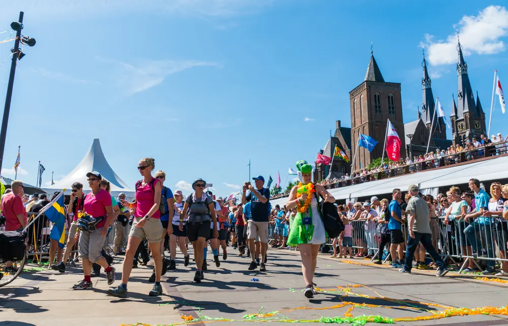

Vierdaagse 2027: data, inschrijven en routes
Bijgewerkt op 25 oktober 2026.
De 109e Nijmeegse Vierdaagse wordt gelopen van dinsdag 20 tot en met vrijdag 23 juli 2027. Meer dan 45.000 wandelaars uit ruim 70 landen lopen dan vier dagen lang 30, 40 of 50 kilometer per dag door Nijmegen en omgeving. Wil je meedoen? Hier lees je wanneer de inschrijving waarschijnlijk opengaat, wat het kost, welke routes je loopt en wat je nu al kunt regelen.

Inschrijven voor de Vierdaagse 2027
Op 25 oktober 2026 kon je je nog niet inschrijven voor de Vierdaagse van 2027. Voor 2026 maakte de organisatie de data en de werkwijze half december bekend, dus verwacht het nieuws voor 2027 rond dezelfde tijd. Wat je wel al kunt doen: een registratienummer aanmaken op 4daagse.nl. Dat gebruik je bij de inschrijving, en ben je het kwijt, dan kun je het daar ook opvragen.
Zo ging de inschrijving in 2026
Om je een idee te geven, zo werkte het voor de Vierdaagse van 2026:
- Periode 1 (26 januari t/m 6 februari): alleen voor wandelaars die in de tien jaar daarvoor minstens één keer de Vierdaagse hadden uitgelopen op hun eigen afstand, en voor jongeren geboren tussen 2008 en 2014.
- Periode 2 (9 februari t/m 5 juni): voor iedereen, tot het maximum van 47.000 deelnemers was bereikt.
- Start: de inschrijving ging om 10.00 uur open, volledig online.
- Groepen: burgergroepen konden zich niet in periode 1 inschrijven, maar wel daarna via de servicedesk.
- Vol? Dan kon je via het officiële platform op de website een startbewijs van iemand anders overnemen, en er kwam een wachtlijst.
In de aankondiging voor 2026 stond geen loting: je kon je inschrijven tot het maximum was bereikt. Ben je een nieuwe wandelaar, houd dan vanaf december de website en de app van de 4Daagse in de gaten en wees er op de eerste dag van periode 2 snel bij.
Wat kost de Vierdaagse?
Het inschrijfgeld was in 2025 en 2026 €120. Het bedrag voor 2027 wordt bekendgemaakt als de inschrijving opengaat. Reken daarnaast op kosten voor goede schoenen, overnachten en reizen.
Afstanden en wie welke afstand loopt
Je kiest tussen 30, 40 en 50 kilometer per dag, en je moet vier dagen achter elkaar minimaal jouw afstand lopen. Welke afstand je mag lopen, hangt af van je leeftijd en of je als burger, in een groep of als militair meedoet. De 30 kilometer is voor jongeren en voor wandelaars van 60 jaar en ouder; de precieze leeftijdsgrenzen staan in ons artikel met veelgestelde vragen over de Vierdaagse en in het reglement op 4daagse.nl.
De routes: vier dagen, vier gebieden
- Dag 1, dinsdag 20 juli: Dag van Elst. Door de Overbetuwe, tussen de Waal en de Rijn.
- Dag 2, woensdag 21 juli: Dag van Wijchen. Door het Land van Maas en Waal. Het is ook Roze Woensdag, dus veel wandelaars en supporters lopen in het roze.
- Dag 3, donderdag 22 juli: Dag van de Zevenheuvelen. De zwaarste dag, met heuvels rond Groesbeek en Berg en Dal.
- Dag 4, vrijdag 23 juli: Dag van Cuijk. Over een pontonbrug over de Maas en via Malden terug naar Nijmegen, met als finale de intocht over de Via Gladiola.
De exacte routes per afstand worden in het voorjaar op 4daagse.nl en in de app gepubliceerd. Start en finish zijn elke dag bij de Wedren in Nijmegen.
Nu al voorbereiden
- Train op tijd: begin maanden van tevoren en bouw langzaam op. In ons artikel over blessures voorkomen lees je hoe.
- Boek je slaapplek: in de Vierdaagseweek zitten hotels en B&B's snel vol. Kijk bij overnachten in Nijmegen of campings rond Nijmegen.
- Loop eerst een kortere tocht: een meerdaagse wandeling in het voorjaar laat zien of je schoenen en sokken goed zitten.
Meer over de Vierdaagse lees je in onze gids Nijmeegse Vierdaagse.
Veelgestelde vragen
Wanneer is de Vierdaagse 2027?
De 109e Nijmeegse Vierdaagse is van dinsdag 20 tot en met vrijdag 23 juli 2027. De intocht over de Via Gladiola is op vrijdag 23 juli.
Wanneer kun je je inschrijven voor de Vierdaagse 2027?
Dat is nog niet bekend. In 2026 ging de inschrijving op 26 januari open voor eerdere deelnemers en jongeren, en op 9 februari voor iedereen. Voor 2026 werden de data half december bekendgemaakt.
Wat kost de Vierdaagse 2027?
Het bedrag voor 2027 is nog niet bekend. In 2025 en 2026 was het inschrijfgeld €120.
Is er een loting voor de Vierdaagse?
In de aankondiging voor 2026 stond geen loting. Je kon je inschrijven tot het maximum van 47.000 deelnemers was bereikt. Daarna kon je via het officiële platform een startbewijs overnemen of op de wachtlijst.
Welke afstanden loop je tijdens de Vierdaagse?
Je loopt vier dagen achter elkaar 30, 40 of 50 kilometer per dag. Welke afstand je mag lopen, hangt af van je leeftijd en je categorie.
Welke routes loop je tijdens de Vierdaagse?
Dag 1 is de Dag van Elst door de Overbetuwe, dag 2 de Dag van Wijchen, dag 3 de Dag van de Zevenheuvelen rond Groesbeek en dag 4 de Dag van Cuijk, met de intocht over de Via Gladiola.